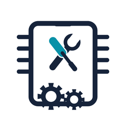

أهلاً بيك 👋
محمد صلاح
⋮
🏆 ترتيب الفنيين
👤 حسابي
⏰ المواعيد
💰 مرتبك
🔩 قطع الغيار
📦 قطع الغيار المخزنة
⚙️ الإعدادات
تسجيل الخروج ⏻
×
📢
تمام، فهمت 👍
جاري تحميل أجهزتك...
⚙️ الإعدادات
×
🎨 المظهر
🌐 اللغة